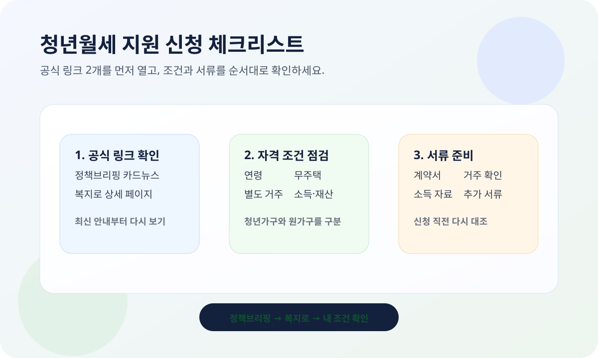

청년월세 지원 신청은 조건이 여러 갈래라서 제목만 보고 넘기기 쉽습니다. 이 글은 2026년 3월 19일 정책브리핑 카드뉴스와 복지로 청년월세 지원 상세 페이지를 기준으로, 신청 전에 무엇을 먼저 확인해야 하는지 체크리스트로만 정리했습니다.
정책브리핑 카드뉴스 기준으로는 2026년 3월 30일부터 5월 29일까지 신청 안내가 보이고, 지원 내용도 함께 안내돼 있습니다. 다만 신청 기간, 연령, 소득·재산 조건은 바뀔 수 있으니 실제 신청 전에는 아래 공식 링크에서 다시 확인하세요.

먼저 볼 3가지
- 신청 기간: 정책브리핑 카드뉴스와 복지로 상세 페이지에서 최신 일정 확인
- 자격 조건: 연령, 무주택 여부, 부모와의 별도 거주 여부 확인
- 소득·재산 기준: 청년가구와 원가구 기준을 각각 다시 확인
공식 안내에서 보이는 기준
2026년 3월 19일 정책브리핑 카드뉴스에는 부모와 따로 거주하는 19세부터 34세까지의 무주택 청년이라고 안내돼 있습니다. 또 청년가구는 중위소득 60%·자산 1.22억 이하, 원가구는 중위소득 100%·자산 4.7억 이하 기준이 함께 보입니다.
지원은 월 최대 20만 원씩 최장 24개월, 생애 1회로 안내돼 있고, 신청은 복지로 온라인 또는 주소지 행정복지센터 방문으로 안내됩니다. 다만 이 수치는 공식 페이지에서 다시 확인하는 편이 안전합니다.
신청 전에 꼭 확인할 것
1. 내가 보는 기준이 맞는지
청년월세 지원은 연령만 보는 제도가 아닙니다. 무주택 여부, 부모와의 분리 거주, 소득·재산 기준이 함께 맞아야 하므로 한 항목만 보고 판단하면 안 됩니다.
2. 내 상황이 청년가구인지 원가구인지
헷갈리기 쉬운 부분입니다. 본인만 보면 되는지, 부모와 함께 보는지에 따라 확인 항목이 달라질 수 있으니 복지로 상세 페이지에서 본인 상황을 다시 대조하세요.
3. 계약서와 실제 거주 상태가 맞는지
임대차 계약서 주소, 전입 상태, 실제 거주지가 서로 다르면 심사 과정에서 막힐 수 있습니다. 주소를 옮겼거나 계약을 갱신했다면 이 부분부터 확인하는 편이 좋습니다.
4. 서류를 미리 준비했는지
- 신분증
- 임대차 계약서
- 거주 확인 서류
- 소득 확인 자료
- 복지로 상세 페이지에 적힌 추가 제출 서류
청년월세 지원은 "대상 같아 보인다" 수준으로 신청하면 서류 단계에서 다시 확인이 필요할 수 있습니다. 가장 안전한 순서는 정책브리핑으로 큰 틀 확인 → 복지로 상세 페이지 확인 → 서류 준비 → 신청입니다.
한 번에 요약하면
청년월세 지원은 연령, 거주 형태, 소득·재산, 신청 기간, 서류를 같이 봐야 하는 제도입니다. 그래서 글 제목보다 공식 링크를 먼저 열고, 내 조건을 다시 대조하는 방식이 가장 덜 헷갈립니다.
자주 묻는 질문
Q. 기사 제목에 나온 일정만 믿어도 되나요?
아니요. 정책브리핑 카드뉴스에 안내된 일정은 참고하되, 실제 신청 직전에는 복지로 상세 페이지에서 최신 접수 기준을 다시 확인하세요.
Q. 월세만 내고 있으면 바로 신청 가능한가요?
그렇지 않습니다. 연령, 무주택 여부, 부모와의 별도 거주, 소득·재산 기준을 함께 봐야 합니다.
Q. 가장 많이 놓치는 부분은 뭔가요?
청년가구와 원가구 기준을 섞어 보거나, 서류와 실제 거주 상태를 같이 확인하지 않는 경우가 많습니다. 두 공식 링크를 함께 보는 편이 안전합니다.